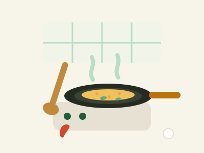

Katering rumahan sejak 2019 — Sleman, Yogyakarta
Masakan rumahan, hangat sampai ke pintumu.
Nasi box, tumpeng, sambal botol, sampai frozen food — dimasak tiap pagi dari bahan segar pasar lokal. Pesan lewat WhatsApp, tinggal tunggu di rumah.
4,9/5 dari 230+ pelanggan
Melayani Sleman & Kota Yogyakarta
Bahan halal, dapur bersih
Belanja pasar tiap pagi
Kenapa Pilih Kami
Dimasak seperti untuk keluarga sendiri.
Empat hal yang bikin pelanggan balik lagi.
-
Bahan segar pasar lokal
Belanja tiap pagi di pasar, dimasak hari itu juga — bukan stok berhari-hari.
-
Higienis & halal
Dapur dijaga bersih, bahan halal, kemasan tersegel rapi.
-
Bisa custom pesanan
Level pedas, isi box, sampai paket acara — bisa disesuaikan permintaan.
-
Antar cepat area Jogja
Gratis antar untuk pesanan 5 box ke atas, area Sleman & Kota Jogja.
Cara Pesan
Pesan itu gampang — tiga langkah saja.
-
Pilih menu
Lihat daftar di halaman ini, atau tanya menu harian langsung ke WhatsApp kami.
-
Chat WhatsApp
Klik tombol pesan — menu yang kamu pilih otomatis terketik di chat.
-
Diantar hangat
Konfirmasi tanggal & alamat. Pesanan diantar tepat waktu, masih hangat.

Resep keluarga sejak 2019
Tentang Kami
Dari dapur kecil di Sleman, untuk meja makan keluargamu.
Dapur Bu Sari dimulai dari hobi Bu Sari memasak untuk acara RT. Sekarang, dua dapur rumahan kami melayani pesanan harian, rapat kantor, sampai syukuran — dengan resep keluarga yang tidak berubah sejak hari pertama.
Kami percaya makanan yang jujur lahir dari bahan segar dan tangan yang telaten. Semua pesanan dimasak setelah dipesan, bukan dipanaskan ulang.
Galeri
Sekilas dari dapur & meja kami.
Klik salah satu gambar untuk melihat lebih besar.
Kata Pelanggan
Yang sudah pernah pesan bilang apa?
Ada acara kantor, syukuran, atau arisan?
Kabari 2–3 hari sebelumnya — kami siapkan menunya, kamu tinggal terima beres.
Atau simpan nomor kami: 0812‑0000‑0000
Kontak & Lokasi
Mampir, atau langsung chat saja.
-
Alamat dapur
Jl. Kaliurang KM 8, Ngaglik, Sleman, Yogyakarta
-
Jam buka
Buka Senin–Sabtu 08.00–20.00 WIB